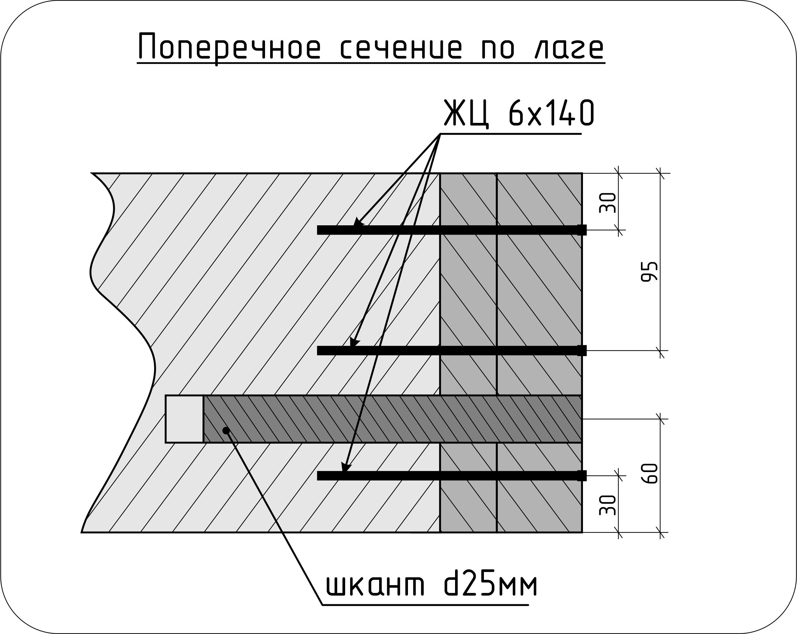
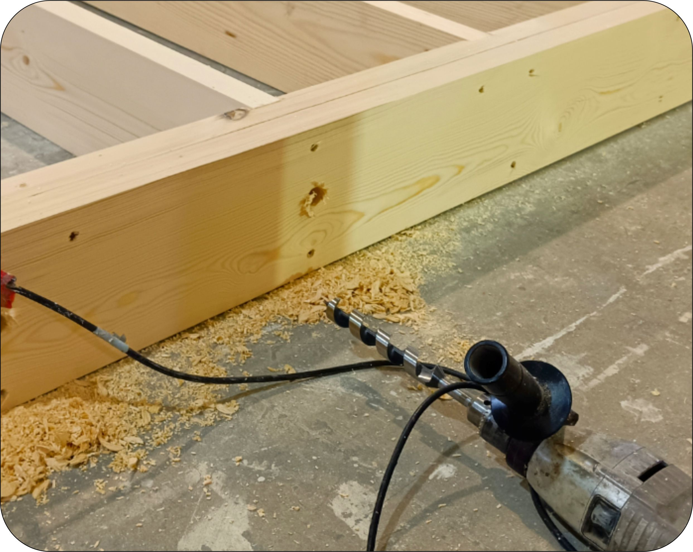
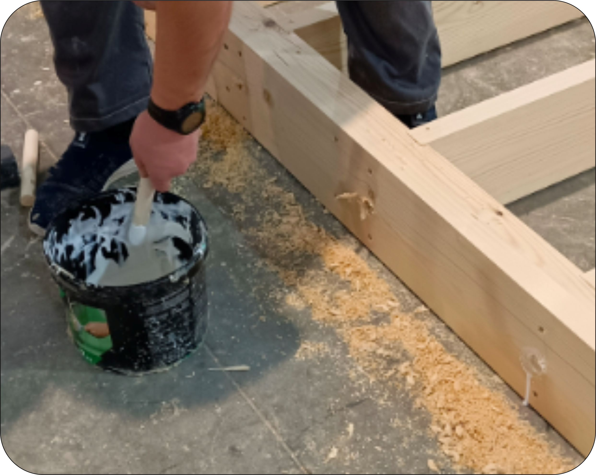
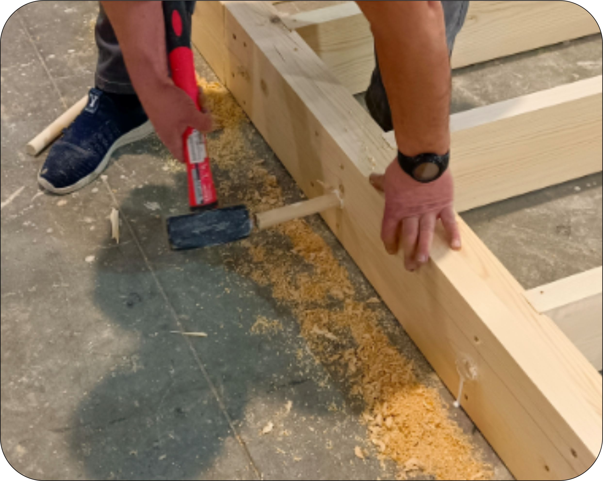
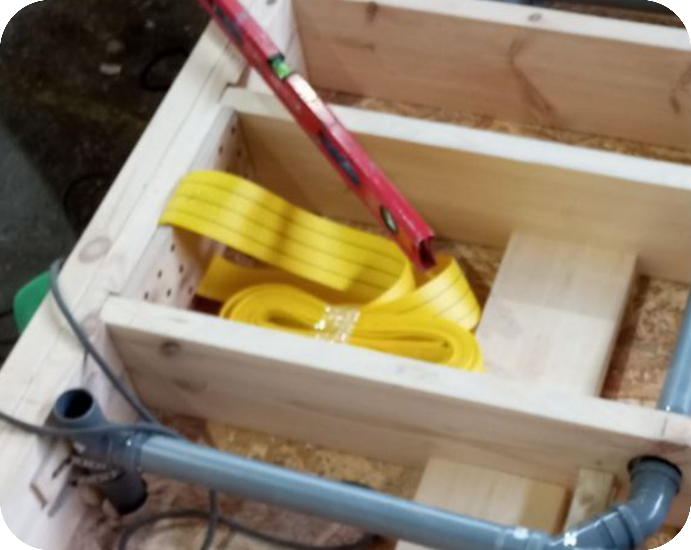

Раздел КС.ПП.
Альбом сборки типовых узлов каркасаОперация 2.1.1
Сборка каркаса панели
📋 Необходимая документация
🔧 Производимые операции
-
Просверлить в балках по 3 отверстия на каждый стык с лагой. Привязка по высоте балки: 30мм — 95мм — 160мм.

-
Собрать сдвоенные балки согласно чертежа. Между собой балки склеивать на ПВА-М и стянуть саморезами ЖЦ 6х80 в шахматном порядке с шагом 600мм.

-
Собрать каркас, выравнивая балки и лаги по верхней плоскости. Крепить балку на 3 самореза ЖЦ 6х140 в каждый торец лаги.

-
Усилить лаги шкантами 25мм длиной 150мм. Сделать отверстия диаметром 25мм и глубиной 170мм низкооборотистой дрелью. Погрузить шкант на 50мм в клей ПВА-М и вставить в просверленное отверстие. Забить шкант киянкой.



-
Установить торцевые лаги. Торцевые сдвоенные лаги дополнительно склеить ПВА-М и стянуть саморезами ЖЦ 6х80 в шахматном порядке с шагом 300мм.

-
Разметить положение закладных перемычек. Засверлить в перемычках отверстия под саморезы. Сверлить в боковых гранях под углом к торцевым. Закрепить закладные на каркасе саморезами ЖЦ 6х120.

-
Произвести монтаж строп. Установить фанеру внутрь кольца стропы, выровнять по нижней стороне каркаса и закрепить к каркасу панели пола на участке согласно чертежа. Крепить на саморезы ЖЦ 6х80, по 18 штук на каждое крепление стропы.

-
Готовность к ППУ. Перевернутые панели со стропами готовы к нанесению ППУ-утеплителя.

✅ Контрольные параметры
По факту контрольных замеров ставится отметка в паспорте ОТК.
🛠️ Необходимый инструмент и оборудование
📦 Расходные материалы
Фотоальбом операции

Отсканируйте QR-код для просмотра фотоальбома с примерами выполнения данной операции
Открыть фотоальбом